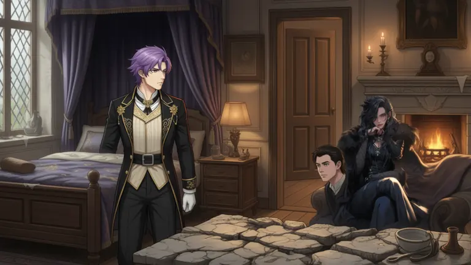
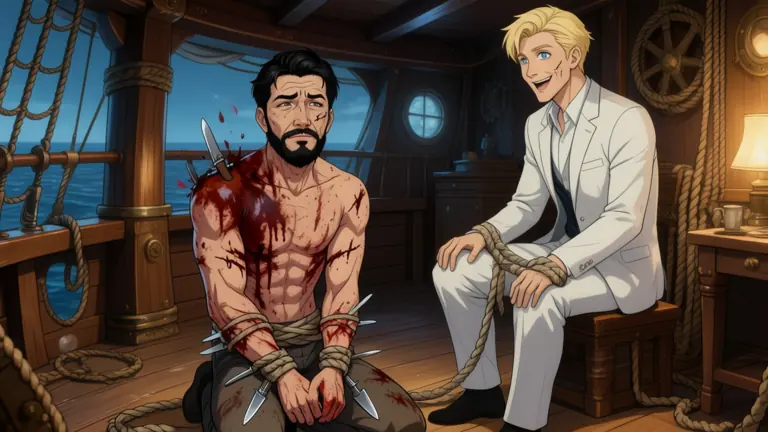

4 November 2026 · FLUX.2 Klein 4B FP8 · no image Fast Mode · first generation only
New chapters, measured before repairs.
Chapters 3–4 now have 12 distinct illustrative test beats, each rendered with two seeds per comparison. These are testing assets, not completed narrated chapters. Earlier-story tests cover every non-intro chapter shot with two identity references.
First-generation reliability is not fully fixed. Neutral canon-aligned references reduced blockers from 3/24 to 1/24 in the first new-chapter pilot. Short-name binding tied at 1/24 against 1/24 on fresh new-chapter seeds, then worsened the earlier captive-story cohort from 18/33 to 24/33. Automatic binding stays disabled. Do not pool these story-specific rates into a 700-image/day forecast.
Matched cohort
Input
Blocked first images
Unblocked with findings
New chapters: reference comparison
Original references
3 / 24
3
New chapters: reference comparison
Aligned references
1 / 24
4
New chapters: short-name binding
Binding off
1 / 24
8
New chapters: short-name binding
Binding on
1 / 24
5
Earlier story: all two-reference chapter shots
Binding off
18 / 33
14
Earlier story: all two-reference chapter shots
Binding on
24 / 33
9
New measured spend: $0.5937 conservative GPU/disk upper bound plus recorded API usage; about $0.18 remains from the previous allowance. No additional allowance was used. Every test GPU was deleted and verified absent. Voice forecast remains 12.3 minutes; no voice generation or two-hour video forecast change.
Visual-review limit: collar-grip ownership reversals remain visible in some frames that Practical QC classified as advisory. An unblocked result is not a guarantee that every planned action is correct. These are testing assets, with no manual acceptance overrides or production export.
Qwen40 diagnostics: two completed across two workers
Qwen-Edit-2511 GGUF Q4_K_M, 40 steps, CFG4, native1280×720, portrait references only. Two targeted first-generation diagnostics completed; both were unblocked by the same Practical QC. These are selected diagnostic cases, not a paired model benchmark or a reliability rate. Independent visual review still sees staging/style differences and possible restraint transfer to the captor in the captive scene. Routing stays unchanged; these images are not approved production replacements.
The first worker skipped the captive case because it no longer fit its conservative admission window. A separate capped worker completed that case. All model loads, startup and shutdown for both workers are included in the $0.2131 combined GPU/disk upper bound. No failed scene image was supplied to either model request.
Three-person scene · Unblocked by Practical QC · 213.3s client generation interval, including load/reference processing and delivery; shared setup is separate.

Astra is seated by the fireplace rather than standing in the doorway as staged in the shot description.
Captive scene · Unblocked by Practical QC · 213.4s client generation interval, including load/reference processing and delivery; shared setup is separate.

Christopher is visibly wearing pants despite the planned appearance that he has been stripped of his clothes.
What changed, and what this does not prove
The original Vaan portrait has brown hair and a fire pose. A separate neutral portrait follows the published violet-hair/golden-eye traits. The original remains intact. A new Aldric reference provides a consistent illustrative design; his chosen dark hair and face are not asserted as canon.
The reference comparison combines neutral/canon-aligned Vaan and butler-reference coverage. It does not isolate which change caused a gain.
The name-binding candidate links unambiguous short names in the action to the actual numbered reference. Manual prompts and manual reference selections bypass it. No extra planning API call is required.
Current project constraints were already generic. The 24 identical-request scoped controls had no intervention and are not an independent prevention arm. The unused constraint-filter prototype was not installed.
Practical QC, clothing-only advisory policy, source-fact authority, 1280×720, 4 steps, CFG1, reference strength0.65, precision and model stayed fixed. All QC input and reference bytes were common within each pair. Exact duplicate review inputs shared one grade.
No repairs or acceptance overrides were used. Advisory findings remain visible. These small, seeded story-specific tests cannot establish a universal failure rate, prove model weights are fixed, or replace reviewing the remaining errors.
Previews below are resized for website loading. Full-resolution PNG masters and all frozen requests remain in the local test folder; QC used full originals.
Sources and execution counts
Source facts verified against Chapter 3 and Chapter 4. Storyboards and short narration snippets on this page are independently authored illustrative tests.
Two reference-preparation images are counted separately. Same-GPU comparisons were used within each cohort. Reference pilot: RTX4090 after 5090 unavailable. Later binding cohorts: RTX5090. GPU times are not compared across cohorts.
New chapters: reference comparison
Original portraits versus neutral/canon-aligned Vaan plus an Aldric reference, using the same beats and seeds. The scoped control made no input changes and is omitted as a duplicate display. No repairs.
Chapter 3 · Awakening · seed 1
Vaan wakes in a grand unfamiliar bedroom and looks around.
Aldric appears upright and relatively composed rather than visibly intimidated and apologetic; the planned fearful, floor-level staging is also absent.
Chapter 4 · Astra arrives · seed 1
Astra arrives and calls out to Vaan during his interrogation of Aldric.
Vaan’s expression reads as composed rather than clearly startled, a minor mismatch with the narrated recognition.
New chapters: short-name binding
Fresh-seed same-GPU first-generation matched test of existing aligned references versus automatic reference-slot binding with short-name resolution. No prompt replanning, pose change, quality change, repair or API planning. Eight single-person cases are unchanged-input controls.
Vaan appears bent toward the meal table rather than clearly recoiling backward from Aldric.
Binding on · Clear
No findings from Practical QC.
Chapter 3 · Instinctive recoil · seed 2
Binding off · Clear
No findings from Practical QC.
Binding on · Advisory
Vaan is shown leaning forward over the meal table rather than clearly recoiling backward; his lowered head is consistent with the narration.
Chapter 3 · Approaching Aldric · seed 1
Binding off · Advisory
Both characters are seated across the meal table rather than visibly approaching; the image otherwise shows Vaan facing Aldric.
Binding on · Advisory
Vaan and Aldric are seated across the meal table rather than visibly approaching; the direct eye contact and questioner staging are otherwise consistent.
Chapter 3 · Approaching Aldric · seed 2
Binding off · Advisory
Vaan and Aldric are seated across the table rather than showing Vaan approaching; their eye contact and questioning setup are otherwise conveyed.
Binding on · Clear
No findings from Practical QC.
Chapter 3 · Plate confrontation · seed 1
Binding off · Clear
No findings from Practical QC.
Binding on · Clear
No findings from Practical QC.
Chapter 3 · Plate confrontation · seed 2
Binding off · Clear
No findings from Practical QC.
Binding on · Blocked
The narrated plate strike is not depicted: Vaan and Aldric appear to be jointly holding or exchanging the plate rather than Vaan striking Aldric.
Chapter 3 · Collar grip · seed 1
Binding off · Advisory
Aldric is kneeling relatively upright rather than visibly cowering, a minor staging difference.
Binding on · Clear
No findings from Practical QC.
Chapter 3 · Collar grip · seed 2
Binding off · Clear
No findings from Practical QC.
Binding on · Clear
No findings from Practical QC.
Chapter 4 · Butler answers · seed 1
Binding off · Advisory
Aldric is upright rather than on the floor and appears only mildly concerned, so the requested fearful, intimidated staging is not fully conveyed.
Binding on · Advisory
Aldric is standing rather than looking up from the floor as directed; this is a minor staging difference.
Chapter 4 · Butler answers · seed 2
Binding off · Advisory
Aldric is shown standing rather than on the floor as staged; the narration does not require him to be on the floor.
Binding on · Advisory
Aldric is standing rather than appearing in the requested foreground position on the floor; the collar-grip interaction is otherwise depicted.
Chapter 4 · Astra arrives · seed 1
Binding off · Blocked
Vaan's clearly visible hair is black rather than his canonical violet, causing a visible main-character identity mismatch.
Binding on · Clear
No findings from Practical QC.
Chapter 4 · Astra arrives · seed 2
Binding off · Advisory
The meal table appears intact, though the planned staging calls for a broken table.
Binding on · Advisory
The meal table appears intact rather than broken as staged in the shot description.
Chapter 4 · Recognition · seed 1
Binding off · Advisory
Vaan's expression reads relatively neutral rather than clearly astonished, though he is turned toward Astra.
Binding on · Clear
No findings from Practical QC.
Chapter 4 · Recognition · seed 2
Binding off · Clear
No findings from Practical QC.
Binding on · Clear
No findings from Practical QC.
Earlier story: all two-reference chapter shots
All 33 non-intro chapter shots with two reference images in the original 110-shot story; chosen by input reference count without selecting pass/fail labels. New matched seeds, same quality, same original portraits, binding off/on. No repairs or prompt replanning.
1 · shot-8baa2007e0d84e06
Binding off · Advisory
Christopher is shown wearing trousers despite the planned appearance stating that he has been stripped of his clothes.
The composition includes a large, black-haired suited figure in the foreground, making the requested blurred viewpoint from Christopher read as an additional person rather than his viewpoint.
Binding on · Blocked
Christopher appears twice in the same frame: as the large foreground figure and as the injured kneeling man, creating a clearly duplicated character.
Christopher is not fully stripped: the foreground figure wears a dark suit, and the kneeling figure wears trousers.
2 · shot-159a922dec80431f
Binding off · Blocked
Christopher is visibly wearing a dark outfit, contrary to the planned stripped appearance.
The image shows Jonathan handling Christopher’s bound hands alongside knives, rather than leisurely eating steak while speaking to him.
Binding on · Blocked
Jonathan is actively handling the bound man's restraints and knives rather than leisurely eating steak as described in the narration.
Christopher is wearing a dark sleeveless shirt and trousers despite the planned appearance stating he is stripped of his clothes.
3 · shot-9e1995bcf1ca4fa8
Binding off · Advisory
Christopher is wearing dark trousers despite the planned appearance stating he is stripped of his clothes.
Binding on · Blocked
Christopher’s hands are visibly free and supporting his body, contradicting the narrated fact that he is all tied up.
Christopher is wearing pants despite the planned appearance that he has been stripped of his clothes.
4 · shot-2e1c5f3853594a8f
Binding off · Blocked
Christopher is depicted as the seated, clothed, unbound man holding knives, while the kneeling, bloodied, apparently restrained figure is blond and resembles Jonathan—reversing the main characters’ identities and roles.
The bound-and-kneeling captive is not Christopher: Christopher is visibly free and seated, contradicting the planned action and restraint.
Binding on · Blocked
Christopher is seated in a white suit with free hands holding a knife, while Jonathan is the blond man kneeling and visibly bound; this reverses the required roles and leaves Christopher unbound instead of kneeling with tied limbs.
Christopher is wearing a white suit rather than being stripped of his clothes.
5 · shot-c614de5aa5964f91
Binding off · Advisory
Christopher is visibly wearing a shirt and pants, although his planned appearance is stripped of his clothes.
Binding on · Advisory
Christopher is visibly wearing dark pants despite the planned appearance state that he has been stripped of his clothes.
6 · shot-72a0575ed0854744
Binding off · Blocked
Christopher is depicted as a clothed, seated bearded man and also as a separate headless kneeling body, creating a duplicated and severely defective focal character.
Binding on · Blocked
Jonathan is depicted as a dark-haired, bearded man rather than the canonical blond, clean-shaven character.
Christopher is visibly bound at the limbs but has clearly free, spread hands resting on the floor.
The wine-holding woman is absent; the only visible woman is seated in the chair area holding a wine glass rather than a steak plate.
7 · shot-fd95267f3e2f499a
Binding off · Blocked
Christopher’s limbs are described as tied, but his hands are visibly free and supporting his weight.
Christopher is wearing trousers and a harness despite the planned appearance specifying that he is stripped of his clothes.
Binding on · Blocked
Christopher’s hands are visibly free and supporting his body, despite his limbs being specified as tied.
Christopher is wearing trousers despite being specified as stripped of his clothes.
8 · shot-88fea8f6e6fd46d9
Binding off · Advisory
Christopher is shown wearing dark trousers despite the planned appearance that he has been stripped of his clothes.
Christopher is seated and hunched rather than kneeling upright, and Jonathan is sharply rendered rather than blurred behind him.
Binding on · Advisory
Christopher is shown seated/crouched rather than upright on his knees.
Christopher wears dark trousers despite the planned stripped-down appearance. Jonathan is also nearly as prominent as Christopher rather than blurred behind him.
9 · shot-42bbabac58784a29
Binding off · Blocked
A second black-haired, bearded man in a suit appears beside the injured Christopher, creating a clear duplicate/extra-person defect.
Binding on · Blocked
Christopher’s clearly visible hands are free and handling blades despite his stated bound-limbs restraint.
Christopher is visibly wearing a shirt and jacket despite the planned stripped appearance.
Jonathan’s white suit is visibly bloodstained rather than neat and clean.
10 · shot-a7107da3b4cb4783
Binding off · Blocked
Christopher appears to be looking directly toward Jonathan, contrary to the narrated action that he ignores him and continues without looking away.
Christopher is wearing shorts despite the planned appearance stating he is stripped of his clothes.
Binding on · Blocked
Christopher’s visible hands are free, contradicting the stated restraint that his limbs are tied.
Christopher appears to be looking directly toward Jonathan rather than ignoring him without looking away.
Christopher is visibly wearing dark shorts or a loincloth despite the planned appearance stating he is stripped of his clothes.
11 · shot-4edad0efaf914c39
Binding off · Advisory
Christopher is wearing dark trousers despite the planned appearance specifying that he has been stripped of his clothes.
Binding on · Blocked
Christopher is visibly clothed rather than stripped of his clothes.
Christopher's hands are visibly free and handling knives despite his limbs being tied.
The staging places both men kneeling in the foreground rather than keeping Christopher centered and Jonathan listening in the background.
12 · shot-0d14a6350d104f11
Binding off · Blocked
Christopher’s bound hands are visibly in front of him, supporting his weight, rather than held behind him as specified.
Christopher is wearing a shirt and trousers despite the planned appearance stating he is stripped of his clothes.
Binding on · Blocked
Christopher’s hands are visibly free and planted on the floor, contradicting the required bound hands held behind him.
Christopher is wearing a shirt and trousers despite the planned stripped appearance.
13 · shot-1451733335994b26
Binding off · Advisory
Christopher is visibly wearing a jacket, shirt, and trousers despite the planned appearance stating that he has been stripped of his clothes.
Christopher is crouched with one knee raised rather than clearly kneeling as requested.
Binding on · Advisory
Christopher is visibly wearing a dark shirt and trousers, despite the planned appearance that he has been stripped of his clothes.
14 · shot-865ef17f6f1b417f
Binding off · Advisory
Christopher is seated rather than kneeling.
Christopher is wearing trousers despite the planned stripped appearance.
Binding on · Blocked
Christopher is not visibly restrained: his wrists are wrapped, but both hands are free and no ties are visible.
Christopher wears dark trousers despite the planned stripped appearance.
15 · shot-3a4500059a7b4be4
Binding off · Blocked
Christopher's wrists appear bandaged rather than tied, with no visible restraint despite his established bound state.
The framing is wider than the requested close-up, reducing Jonathan's expression as the dominant focus.
Binding on · Advisory
Christopher is shown wearing trousers despite the planned stripped appearance.
Christopher is seated rather than falling to his knees, and Jonathan gestures instead of remaining rigid in his chair.
The composition is wider than the planned close-up, with Jonathan not dominating the frame.
16 · shot-f3e5ee92435e4eed
Binding off · Blocked
Christopher has visibly free hands despite being described as bound.
The steak plate is held by the seated men rather than by the bikini-clad woman, who is described as holding it.
Christopher is wearing black trousers despite the planned stripped appearance.
Binding on · Blocked
Christopher is visibly unrestrained, with free hands, despite being required to kneel bound.
Jonathan’s visible face and dark hair do not match his canonical clean-shaven, blond identity.
17 · shot-fbc8cf0ba68140f5
Binding off · Advisory
Jonathan is kneeling beside Christopher rather than being positioned above him as requested; this is a minor staging difference.
Binding on · Blocked
Christopher's wrists are wrapped, but his hands are visibly free to act, conflicting with the expected tied limbs.
18 · shot-52fa199b12894019
Binding off · Blocked
Christopher’s hands are visibly free and gripping knives despite his planned bound-limbs state.
Christopher is wearing pants despite the planned stripped-of-clothes appearance.
The required wine-holding woman behind Jonathan’s chair is not separately visible; the single woman shown appears to combine the steak-plate and wine-holding roles.
Binding on · Blocked
Christopher has visible free hands holding knives despite being bound.
The required wine-holding woman standing behind Jonathan’s chair is absent; the woman shown seated on his lap holds the wine instead.
Christopher is wearing trousers despite the planned stripped appearance.
19 · shot-1c1fc69448124c82
Binding off · Blocked
Christopher has clearly visible free hands bracing on the floor despite being required to remain bound.
Christopher is wearing trousers despite the planned appearance that he has been stripped of his clothes.
Binding on · Blocked
Christopher’s wrists appear wrapped, but his hands are visibly free and not tied together, contradicting his bound state.
20 · shot-f3fe9e3fc9c54704
Binding off · Blocked
Christopher’s hands appear free, with no visible restraints securing his limbs, despite being captured and tied.
Christopher is shown wearing black trousers, although his current appearance calls for him to be stripped of his clothes.
Binding on · Blocked
Christopher is visibly kneeling with both hands free and no visible restraints, contradicting the established fact that his limbs are tied.
Christopher is wearing dark trousers despite the planned appearance that he has been stripped of his clothes.
21 · shot-58bf63776cbf431c
Binding off · Advisory
Christopher is visibly wearing trousers despite the planned appearance stating he was stripped of his clothes.
Binding on · Blocked
Christopher's visibly free hands and lack of visible restraints contradict the specified tied limbs.
Christopher is wearing black trousers despite the planned appearance stating he is stripped of his clothes.
22 · shot-822e928306e94770
Binding off · Blocked
Christopher is still wearing dark trousers despite being described as stripped of his clothes.
Binding on · Advisory
Christopher is visibly wearing a torn vest and trousers rather than being stripped of his clothes.
23 · shot-6a604b5818f441a0
Binding off · Blocked
Christopher’s hands are visibly free and resting on his knees, contradicting the stated bound limbs.
Christopher is wearing black trousers despite the planned stripped appearance.
Binding on · Advisory
Christopher is shown wearing dark trousers despite the planned appearance specifying that he has been stripped of his clothes.
24 · shot-b35c9c54fe0e4804
Binding off · Advisory
Christopher is visibly wearing a shirt, vest, and trousers instead of being stripped of his clothes.
Binding on · Advisory
Christopher is visibly wearing a shirt, vest, and trousers despite the planned stripped appearance.
Jonathan is kneeling rather than turning toward Christopher from a standing position.
25 · shot-af1a4f8257124d01
Binding off · Blocked
Christopher is visibly unbound, with free hands, despite being specified as captured with his limbs tied.
Christopher is wearing trousers and a waist wrap rather than being stripped of his clothes.
Binding on · Advisory
Christopher is shown wearing trousers despite the planned appearance stating he is stripped of his clothes.
26 · shot-faee45aa72c9482f
Binding off · Advisory
Christopher is still wearing a jacket and trousers despite the planned stripped appearance.
Binding on · Blocked
Christopher is visibly wearing a jacket and trousers despite the planned appearance stating that he has been stripped of his clothes.
The bomb is shown as an external device strapped over Christopher’s abdomen rather than as implanted in his stomach.
27 · shot-4bd2757fb7134a7f
Binding off · Clear
No findings from Practical QC.
Binding on · Blocked
Christopher's limbs are not visibly tied; both hands are free despite his required bound state.
Christopher is wearing black trousers despite the planned appearance stating he is stripped of his clothes.
28 · shot-411bf944a2ab47bf
Binding off · Advisory
Christopher is visibly wearing a shirt and pants despite the planned stripped appearance.
Binding on · Blocked
Christopher is visibly wearing a dark shirt and trousers, despite the planned appearance specifying that he is stripped of his clothes.
Christopher’s hands appear free rather than tied as specified; the visible bindings do not clearly restrain his hands.
29 · shot-1d8727e46ae54a5a
Binding off · Blocked
Christopher’s visible hands are free and his limbs are not clearly tied together, contradicting the required bound state.
Christopher is visibly wearing a shirt, vest, and trousers instead of being stripped of his clothes.
Binding on · Blocked
Christopher’s limbs are visibly unbound, with his hands free, contradicting the stated restraint that he remains bound.
Christopher is wearing a jacket, shirt, and pants despite the planned appearance stating that he is stripped of his clothes.
30 · shot-b66ae175cdd14bcd
Binding off · Blocked
Christopher's tied wrists are shown with his hands acting separately; one hand appears to grip a knife while the other rests on his knee.
Christopher is wearing black trousers despite the planned appearance stating he is stripped of his clothes.
Binding on · Blocked
Christopher is shown wearing black pants despite his current appearance being described as stripped of his clothes.
Christopher’s bomb is depicted strapped externally at his waist rather than implanted in his stomach.
31 · shot-3b18cfd293bc423f
Binding off · Advisory
Christopher is shown wearing dark pants despite the planned stripped appearance.
Christopher’s lower-body pose is partly cropped and reads more as seated than clearly kneeling.
Binding on · Advisory
Christopher is visibly wearing dark trousers despite the planned appearance stating that he is stripped of his clothes.
32 · shot-4b43f2baf44d4a5d
Binding off · Advisory
Christopher is visibly wearing a bloodied shirt and trousers instead of being stripped of his clothes.
Binding on · Blocked
Christopher's hands are visibly free despite his limbs being tied.
Christopher is wearing pants despite being stripped of his clothes.
33 · shot-160ba29048584f12
Binding off · Blocked
Christopher's wrists are wrapped, but his hands are visibly free and separated rather than tied as expected.
Christopher is wearing trousers despite the planned stripped appearance.
Binding on · Blocked
Christopher's visible hands are free—one is planted on the floor and the other holds a knife—contradicting the required tied limbs.
Christopher is wearing trousers despite the planned appearance stating that he is stripped of his clothes.